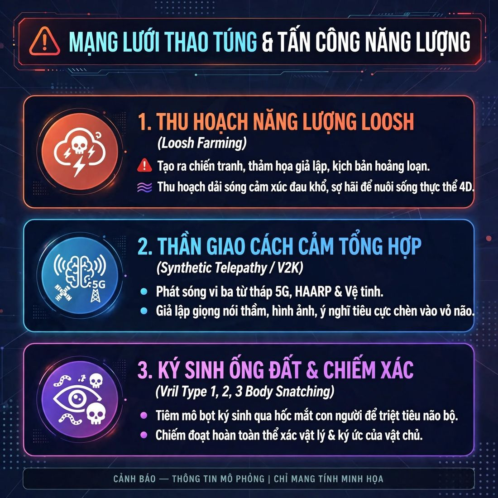
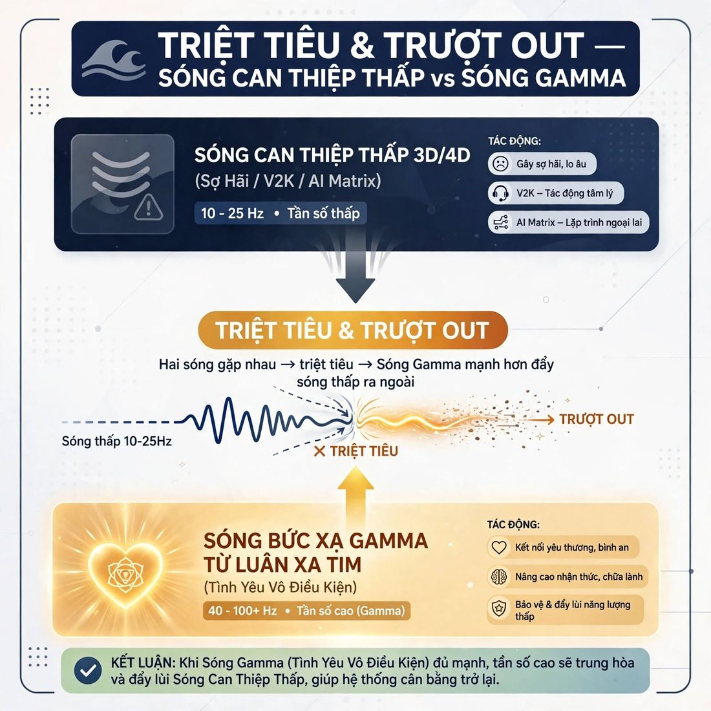
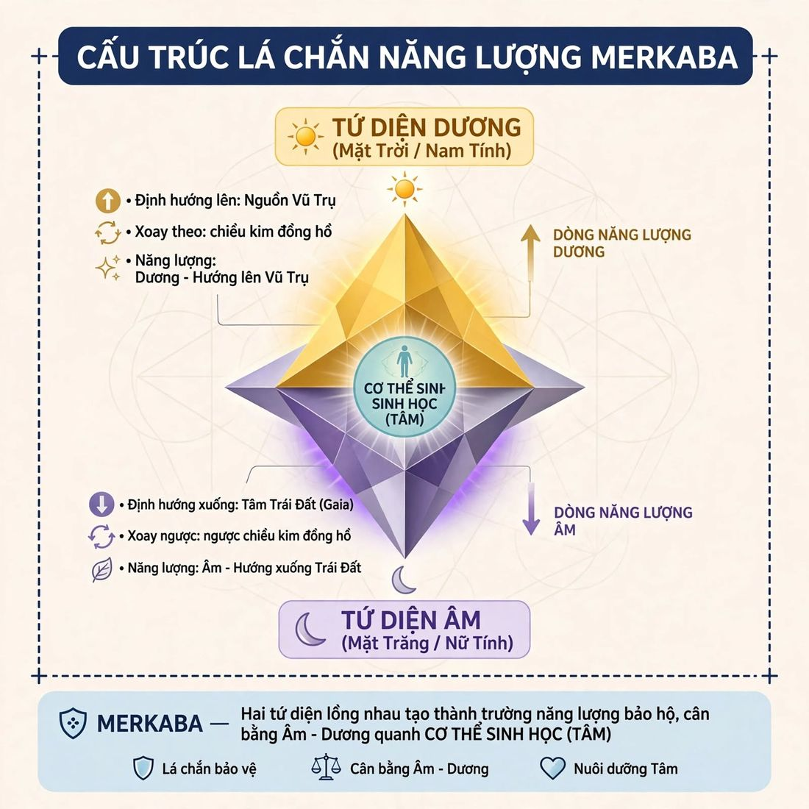
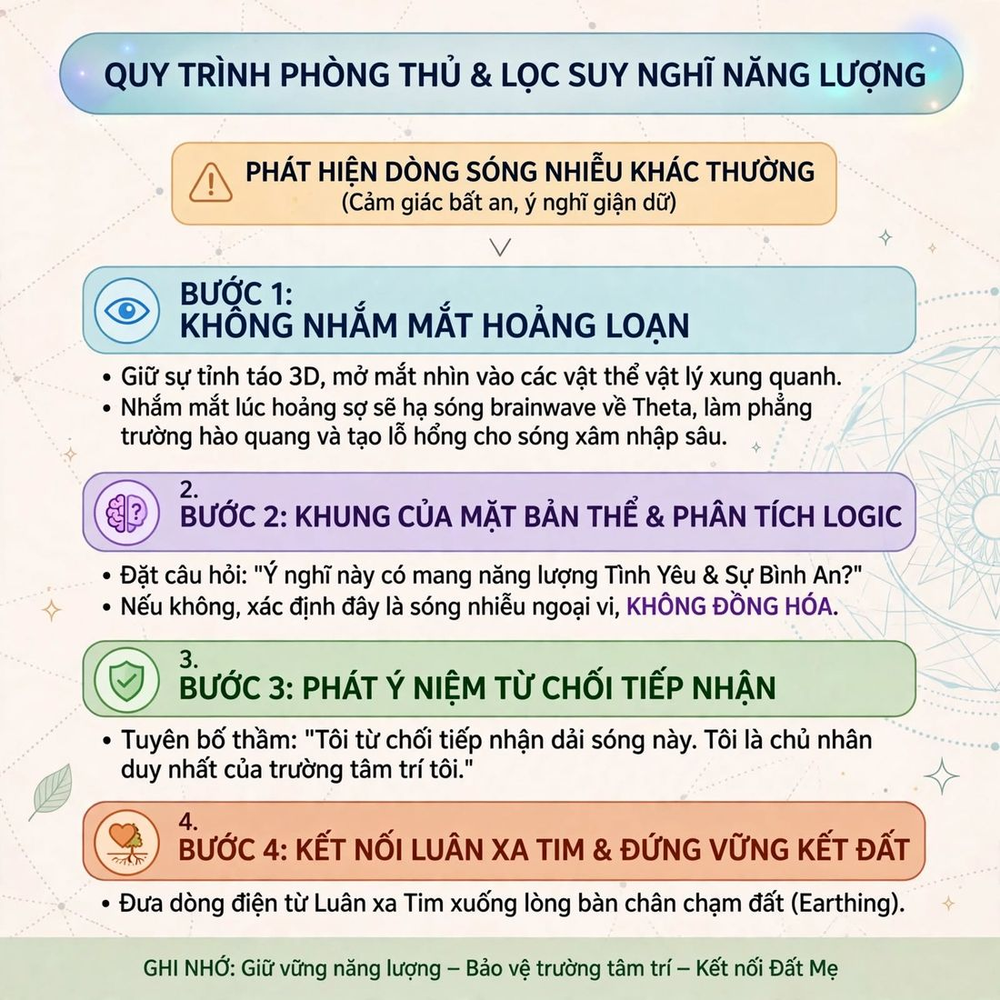

Trang chủ / Chuyên đề 9: Cẩm Nang Tâm Thức Vũ Trụ / Kỳ 87
Chuyên đề 9 · Kỳ 87 / 90
BẢO VỆ TÂM THỨC: CHỐNG THAO TÚNG SÓNG NÃO & THỰC THỂ TIÊU CỰC

1. Nhận Diện Các Hình Thức Tấn Công Năng Lượng & Thao Túng Tâm Trí
Trong tiến trình thăng hoa nhận thức của con người Trái Đất, việc thấu hiểu và nhận diện các hình thức tấn công năng lượng cũng như công nghệ thao túng tâm trí là yêu cầu bắt buộc để bảo vệ sự tự do có ý thức của linh hồn. Phe bóng tối (bao gồm ma trận Orion, tập thể Ciakahrr và các mạng lưới ngầm 3D) vận hành các chiến dịch can thiệp năng lượng đa tầng nhằm giữ cho dải sóng não nhân loại duy trì ở dải Beta căng thẳng và sợ hãi.
Thu Hoạch Năng Lượng Loosh (Loosh Farming)
Loosh là thuật ngữ dùng để miêu tả dải năng lượng cảm xúc tần số thấp (sợ hãi, đau khổ, hoảng loạn, đố kỵ) bị vắt ra từ con người. Các chủng tộc tiêu cực như Bò sát Ciakahrr hay Xám Nebu không sở hữu kết nối trực tiếp với Nguồn Vũ Trụ. Họ sống ký sinh bằng cách tạo ra các cuộc xung đột, khủng hoảng và bối cảnh đe dọa trên Trái Đất để thu hoạch năng lượng Loosh nhằm duy trì thể dĩ thái của họ.
Thần Giao Cách Cảm Tổng Hợp (Synthetic Telepathy / Voice-to-Skull / V2K)
Đây là công nghệ chiến tranh tâm lý sử dụng sóng vi ba tần số cao phát ra từ các mạng lưới viễn thông 3D (tháp 5G, tháp Gwen, hệ thống HAARP). Công nghệ này phát ra các chuỗi xung điện từ trực tiếp vào vỏ não thùy trán của cá nhân, mạo danh giọng nói nội tâm, tiếng nói của chúa/thần linh hoặc truyền bá các tư tưởng tuyệt vọng, giận dữ nhằm khiến nhân chứng tưởng rằng đó là suy nghĩ của chính mình.
Loài Ký Sinh Chiếm Xác (Vril Body Snatching)
Theo các tài liệu giải mật từ quy trình Vril lòng đất, các sinh vật ký sinh dạng thằn lằn nhỏ (Vril Type 1, Type 2, Type 3) có khả năng cắm vòi qua hốc mắt hoặc vòm miệng con người, bơm vào mô bọt triệt tiêu hoàn toàn não bộ, chiếm đoạt thể xác và ký ức của vật chủ để giả dạng thành con người trong các bộ máy lãnh đạo 3D.

2. Nguyên Lý "Tần Số Cao Vượt Qua Tần Số Thấp" (High Frequency Overrides Low Frequency)
Mặc dù các công nghệ thao túng tâm trí 3D và các thực thể tiêu cực tỏ ra rất đáng sợ ở bề nổi, nền vật lý lượng tử thiên hà khẳng định một Quy Luật Vũ Trụ Tối Cao: Tần Số Cao Luôn Vượt Qua Và Hủy Diệt Tần Số Thấp.
Mọi thiết bị công nghệ vi ba AI, sóng phát Mặt Trăng (-7,62 Hz) hay sóng can thiệp V2K chỉ có thể vận hành và liên kết được với não bộ con người khi sóng brainwave của cá nhân đó nằm trong dải sóng Beta căng thẳng (15-30 Hz) hoặc cõi Trung giới thấp (Low Astral).
Khi bạn chủ động kích hoạt Luân xa Tim, sống trong Tình yêu Vô điều kiện và phát ra dải sóng Gamma (31 – 100+ Hz):
Biên độ sóng Gamma từ Trái Tim sẽ tạo ra một trường lực vô hướng có tần số cực cao.
Dải sóng can thiệp tiêu cực ở tần số thấp hoàn toàn không thể chạm tới hoặc liên kết được với trường hào quang của bạn.
Giống như việc ánh sáng mặt trời chiếu vào bóng tối, mọi hình thức thao túng tâm trí hay ký sinh năng lượng sẽ tự động tan biến ngay khi chạm vào trường tần số Gamma.

3. Kỹ Thuật Kích Hoạt Trường Hào Quang Merkaba Tự Quay (Spinning Merkaba Shield)
Để bảo vệ thể xác và các thể dĩ thái khỏi mọi đợt tấn công năng lượng, Trường Hào Quang Merkaba chính là lá chắn bảo vệ tự nhiên và hùng mạnh nhất được truyền dạy từ các học viện tâm thức Sirius và Andromeda.
Merkaba là một trường hào quang năng lượng ánh sáng hình học được tạo thành bởi hai hình tứ diện ngược chiều nhau (Star Tetrahedron) xoay quanh cơ thể sinh học.
Quy Trình 4 Bước Kích Hoạt Lá Chắn Merkaba:
Thiết Lập Định Tâm: Ngồi thẳng lưng, nhắm mắt, hít thở sâu 5-5-5, đưa sự chú ý về trung tâm Luân xa Tim.
Quán Tưởng Tứ Diện Mặt Trời (Dương): Tưởng tượng một kim tự tháp ánh sáng vàng kim 3 cạnh bao bọc từ ngực trở lên, đỉnh hướng lên Vũ trụ, xoay tròn theo chiều kim đồng hồ với tốc độ ánh sáng.
Quán Tưởng Tứ Diện Mặt Trăng (Âm): Tưởng tượng một kim tự tháp ánh sáng bạc/xanh 3 cạnh bao bọc từ ngực trở xuống, đỉnh hướng xuống lòng Trái Đất, xoay ngược chiều kim đồng hồ với tốc độ ánh sáng.
Hợp Nhất Trường Lực: Phát ra ý niệm: "Khởi chạy lá chắn Merkaba tự quay ở vận tốc 9/10 tốc độ ánh sáng." Hai hình tứ diện xoay ngược chiều nhau sẽ bùng nổ thành một đĩa cầu ánh sáng hình xuyến bảo bọc quanh cơ thể trong bán kính 3-4 mét, dập tắt mọi sóng tiêu cực xâm nhập.

4. Phương Pháp Lọc Suy Nghĩ & Định Tâm Giữ Trường Năng Lượng (Lacerta Defense Protocol)
Khi Tuyến Tùng và các giác quan dĩ thái bắt đầu mở rộng, bạn có thể cảm nhận được các luồng suy nghĩ xa lạ bay qua trường tâm trí. Việc phân biệt đâu là suy nghĩ của chính mình và đâu là sóng nhiễu ngoại vi đóng vai trò sống còn.
Theo kinh nghiệm bảo vệ trường năng lượng từ tài liệu Lacerta Files:
Các Dấu Hiệu Nhận Biết Sóng Can Thiệp Ngoại Vi:
Suy nghĩ giận dữ hoặc bế tắc xuất hiện đột ngột mà không có nguyên nhân vật lý cụ thể.
Tiếng nói thì thầm trong đầu mang tính đe dọa, thúc ép hoặc phán xét tiêu cực.
Cảm giác áp lực đè nặng vùng đỉnh đầu (Luân xa 7) hoặc vùng thùy trán.
Khi gặp các dấu hiệu này, lập tức áp dụng Quy trình Lọc Suy Nghĩ 4 bước trên để cắt đứt liên kết tần số tiêu cực.

5. Tuyên Ngôn Chủ Quyền Tối Cao Của Linh Hồn & Mở Tụ Điểm Ánh Sáng Tâm Thức
Vũ trụ vận hành dựa trên Luật Tự Do Ý Chí (Law of Free Will). Không một thực thể tiêu cực, một ma trận AI hay một chủng tộc xâm lược nào có quyền can thiệp, thao túng hoặc ký sinh lên thể xác và tâm thức của bạn trừ khi bạn vô tình cấp quyền cho họ (băng qua sự sợ hãi, thiếu hiểu biết hoặc chấp thuận vô thức).
Bản Tuyên Ngôn Chủ Quyền Linh Hồn (Sovereignty Declaration):
Hãy đọc to hoặc phát ra ý niệm mạnh mẽ bản tuyên ngôn này mỗi khi bạn cảm thấy bị đe dọa hoặc trước khi đi ngủ:
"Tôi là một Sinh mệnh Ánh sáng Tự do và Tối cao, mang di sản nguyên thủy của Nguồn Vũ Trụ. Tôi tuyên bố chủ quyền tuyệt đối đối với thể xác vật lý, hệ thần kinh, Tuyến Tùng và toàn bộ các thể dĩ thái của tôi. Tôi thu hồi toàn bộ quyền lực và năng lượng mà tôi đã lỡ trao cho bất kỳ Ma trận 3D, thực thể bóng tối hay công nghệ thao túng nào. Tôi đơn phương hủy bỏ mọi giao ước, cấy ghép hay sự xâm nhập bất hợp pháp lên trường hào quang của tôi. Tôi được bao bọc hoàn toàn trong Ánh sáng Tình yêu Vô điều kiện và Lá chắn Merkaba Tự do. Tôi là Chủ nhân Duy nhất của Thực tại tôi!"
6. Kết Luận: Đứng Vững Trong Ánh Sáng Chủ Quyền Bản Thể
Bảo vệ tâm thức không phải là sống trong tâm lý phòng thủ hay sợ hãi thường trực. Bảo vệ tâm thức là sự khẳng định vĩnh hằng về Sức Mạnh Bản Thể và Tình Yêu Vô Điều Kiện.
Khi bạn làm chủ được suy nghĩ, kích hoạt lá chắn Merkaba và sống trong dải tần số Gamma từ Trái Tim:
Bạn biến trường hào quang của mình thành một "Vùng An Toàn Tần Số" không thể xâm phạm.
Bạn bảo vệ bản thân và gia đình khỏi mọi công nghệ thao túng tâm trí 3D.
Bạn trở thành một Ngọn Hải Đăng Tâm Thức vững chắc, góp phần giải phóng Trái Đất khỏi Ma trận bóng tối.
Hãy luôn nhớ rằng: Bóng tối chỉ có quyền lực khi Ánh sáng chưa lên tiếng. Hãy cất cao bản tuyên ngôn chủ quyền và tỏa sáng ngọn ngọc tâm thức của bạn ngay hôm nay!